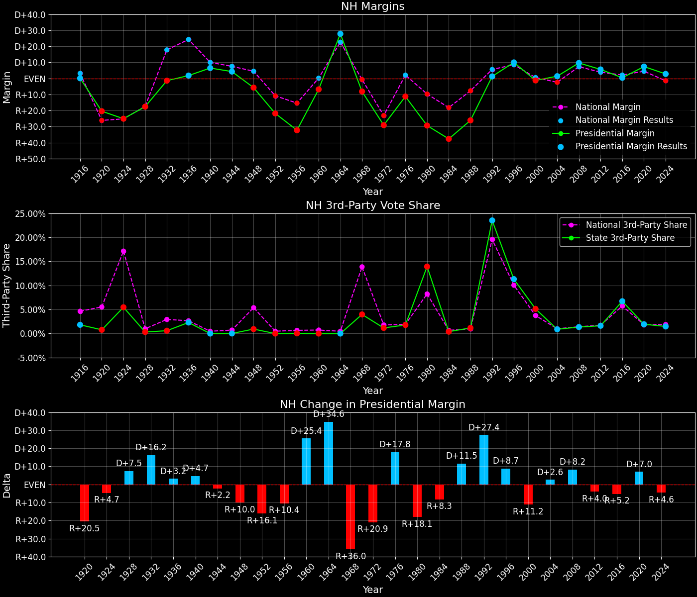
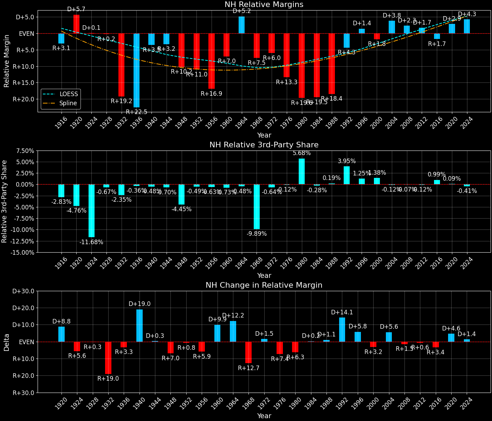
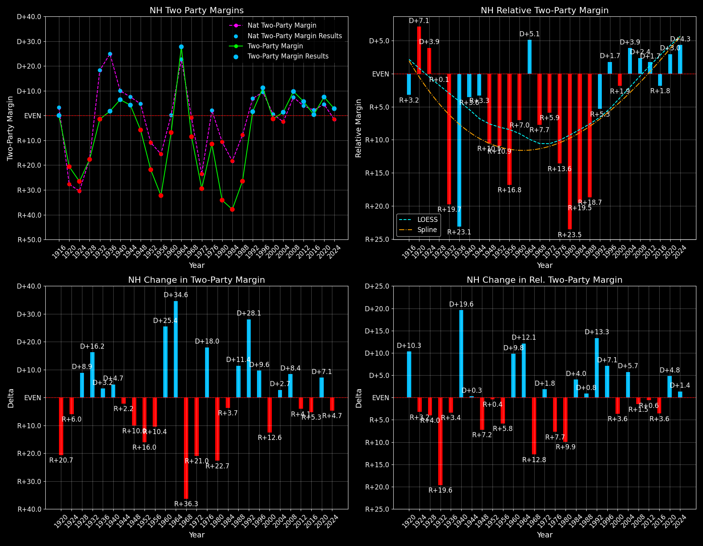

← Back to Map

Margins · 3rd-Party share · Pres. deltas

Relative margins · Relative 3rd-Party · Rel. deltas
New Hampshire (NH) — Total Data
| Year | EVs | D | R | State Margin | Nat. Margin | Rel. Margin | Total votes |
|---|
| 1968 | 4 | 130,589(44.0%) | 154,903(52.2%) | R+8.2 | R+0.6 | R+7.6 | 296,665 |
| 1972 | 4 | 116,435(34.9%) | 213,724(64.0%) | R+29.1(Δ R+20.9) | R+23.5(Δ R+23.0) | R+5.6(Δ D+2.0) | 334,059 |
| 1976 | 4 | 147,635(43.5%) | 185,935(54.7%) | R+11.3(Δ D+17.8) | D+2.2(Δ D+25.7) | R+13.5(Δ R+7.9) | 339,614 |
| 1980 | 4 | 108,864(28.4%) | 221,705(57.7%) | R+29.4(Δ R+18.1) | R+9.9(Δ R+12.1) | R+19.5(Δ R+6.0) | 383,931 |
| 1984 | 4 | 120,395(31.0%) | 267,051(68.7%) | R+37.7(Δ R+8.3) | R+18.1(Δ R+8.2) | R+19.6(Δ R+0.1) | 388,954 |
| 1988 | 4 | 163,696(36.3%) | 281,537(62.5%) | R+26.2(Δ D+11.5) | R+7.7(Δ D+10.4) | R+18.4(Δ D+1.2) | 450,525 |
| 1992 | 4 | 209,040(38.9%) | 202,484(37.7%) | D+1.2(Δ D+27.4) | D+5.6(Δ D+13.3) | R+4.4(Δ D+14.1) | 537,215 |
| 1996 | 4 | 246,214(49.5%) | 196,532(39.5%) | D+10.0(Δ D+8.8) | D+8.6(Δ D+3.0) | D+1.4(Δ D+5.8) | 497,600 |
| 2000 | 4 | 266,348(48.0%) | 273,559(49.3%) | R+1.3(Δ R+11.3) | D+0.5(Δ R+8.0) | R+1.8(Δ R+3.2) | 554,895 |
| 2004 | 4 | 340,511(50.2%) | 331,237(48.9%) | D+1.4(Δ D+2.7) | R+2.5(Δ R+3.0) | D+3.8(Δ D+5.6) | 677,738 |
| 2008 | 4 | 384,826(54.4%) | 316,534(44.7%) | D+9.7(Δ D+8.3) | D+7.3(Δ D+9.7) | D+2.4(Δ R+1.4) | 707,611 |
| 2012 | 4 | 369,561(52.2%) | 329,918(46.6%) | D+5.6(Δ R+4.1) | D+3.9(Δ R+3.4) | D+1.7(Δ R+0.7) | 708,399 |
| 2016 | 4 | 348,526(46.9%) | 345,790(46.5%) | D+0.4(Δ R+5.2) | D+2.1(Δ R+1.8) | R+1.7(Δ R+3.5) | 743,792 |
| 2020 | 4 | 424,921(52.8%) | 365,654(45.5%) | D+7.4(Δ D+7.0) | D+4.4(Δ D+2.3) | D+2.9(Δ D+4.7) | 804,338 |
| 2024 | 4 | 418,488(50.7%) | 395,523(47.9%) | D+2.8(Δ R+4.6) | R+1.5(Δ R+6.0) | D+4.3(Δ D+1.4) | 826,189 |
Column explanations
- Δ
- Change (delta) in the value from the previous election year.
- Year
- Election year.
- EVs
- Number of electoral votes allocated to this state or unit.
- D
- Number of votes for the Democratic candidate (raw count(pct%)).
- R
- Number of votes for the Republican candidate (raw count(pct%)).
- State Margin
- Margin between the two major-party candidates, including third-party votes ((D - R)/total).
- Nat. Margin
- The national presidential margin for that year, including third-party votes ((D_total - R_total)/total_votes).
- Rel. Margin
- The presidential margin relative to the national presidential margin (Margin - Nat. Margin).
- Total votes
- Total voter turnout or ballots cast (when provided).
New Hampshire (NH) — Third-Party Data
| Year | D | R | Other votes | State 3rd-Party Share | 3rd-Party Nat. Share | 3rd-Party Rel. Share |
|---|
| 1968 | 130,589(44.0%) | 154,903(52.2%) | 11,173(3.8%) | 3.77% | 13.59% | -9.82% |
| 1972 | 116,435(34.9%) | 213,724(64.0%) | 3,900(1.2%) | 1.17% | 0.09% | 1.07% |
| 1976 | 147,635(43.5%) | 185,935(54.7%) | 6,044(1.8%) | 1.78% | 0.33% | 1.45% |
| 1980 | 108,864(28.4%) | 221,705(57.7%) | 53,362(13.9%) | 13.90% | 6.98% | 6.92% |
| 1984 | 120,395(31.0%) | 267,051(68.7%) | 1,508(0.4%) | 0.39% | 0.12% | 0.27% |
| 1988 | 163,696(36.3%) | 281,537(62.5%) | 5,292(1.2%) | 1.17% | 0.21% | 0.96% |
| 1992 | 209,040(38.9%) | 202,484(37.7%) | 125,691(23.4%) | 23.40% | 19.23% | 4.17% |
| 1996 | 246,214(49.5%) | 196,532(39.5%) | 54,854(11.0%) | 11.02% | 9.68% | 1.34% |
| 2000 | 266,348(48.0%) | 273,559(49.3%) | 14,988(2.7%) | 2.70% | 3.65% | -0.95% |
| 2004 | 340,511(50.2%) | 331,237(48.9%) | 5,990(0.9%) | 0.88% | 0.84% | 0.05% |
| 2008 | 384,826(54.4%) | 316,534(44.7%) | 6,251(0.9%) | 0.88% | 1.38% | -0.49% |
| 2012 | 369,561(52.2%) | 329,918(46.6%) | 8,920(1.3%) | 1.26% | 1.62% | -0.36% |
| 2016 | 348,526(46.9%) | 345,790(46.5%) | 49,476(6.7%) | 6.65% | 5.54% | 1.12% |
| 2020 | 424,921(52.8%) | 365,654(45.5%) | 13,763(1.7%) | 1.71% | 1.84% | -0.13% |
| 2024 | 418,488(50.7%) | 395,523(47.9%) | 12,178(1.5%) | 1.47% | 1.88% | -0.41% |
Column explanations
- Year
- Election year.
- D
- Number of votes for the Democratic candidate (raw count(pct%)).
- R
- Number of votes for the Republican candidate (raw count(pct%)).
- Other votes
- Number of votes for third-party (other) candidates (raw count(pct%)).
- State 3rd-Party Share
- Share of the vote received by third-party (other) candidates.
- 3rd-Party Nat. Share
- The national third-party share for that year (3rd-Party votes / total votes).
- 3rd-Party Rel. Share
- Third-party share relative to the national third-party share (3rd-Party share - Nat. 3rd-Party share).

Two-party margins · relative · deltas
New Hampshire (NH) — Two-Party Data
| Year | EVs | D | R | 2-Party Margin | 2-Party Nat. Margin | 2-Party Rel. Margin |
|---|
| 1968 | 4 | 130,589(45.7%) | 154,903(54.3%) | R+8.5 | R+0.7 | R+7.8 |
| 1972 | 4 | 116,435(35.3%) | 213,724(64.7%) | R+29.5(Δ R+21.0) | R+23.6(Δ R+22.9) | R+5.9(Δ D+1.9) |
| 1976 | 4 | 147,635(44.3%) | 185,935(55.7%) | R+11.5(Δ D+18.0) | D+2.2(Δ D+25.8) | R+13.7(Δ R+7.8) |
| 1980 | 4 | 108,864(32.9%) | 221,705(67.1%) | R+34.1(Δ R+22.7) | R+10.6(Δ R+12.8) | R+23.5(Δ R+9.8) |
| 1984 | 4 | 120,395(31.1%) | 267,051(68.9%) | R+37.9(Δ R+3.7) | R+18.1(Δ R+7.5) | R+19.7(Δ D+3.8) |
| 1988 | 4 | 163,696(36.8%) | 281,537(63.2%) | R+26.5(Δ D+11.4) | R+7.8(Δ D+10.4) | R+18.7(Δ D+1.0) |
| 1992 | 4 | 209,040(50.8%) | 202,484(49.2%) | D+1.6(Δ D+28.1) | D+6.9(Δ D+14.7) | R+5.3(Δ D+13.4) |
| 1996 | 4 | 246,214(55.6%) | 196,532(44.4%) | D+11.2(Δ D+9.6) | D+9.5(Δ D+2.6) | D+1.8(Δ D+7.1) |
| 2000 | 4 | 266,348(49.3%) | 273,559(50.7%) | R+1.3(Δ R+12.6) | D+0.5(Δ R+8.9) | R+1.9(Δ R+3.6) |
| 2004 | 4 | 340,511(50.7%) | 331,237(49.3%) | D+1.4(Δ D+2.7) | R+2.5(Δ R+3.0) | D+3.9(Δ D+5.7) |
| 2008 | 4 | 384,826(54.9%) | 316,534(45.1%) | D+9.7(Δ D+8.4) | D+7.4(Δ D+9.8) | D+2.4(Δ R+1.5) |
| 2012 | 4 | 369,561(52.8%) | 329,918(47.2%) | D+5.7(Δ R+4.1) | D+3.9(Δ R+3.4) | D+1.7(Δ R+0.6) |
| 2016 | 4 | 348,526(50.2%) | 345,790(49.8%) | D+0.4(Δ R+5.3) | D+2.2(Δ R+1.7) | R+1.8(Δ R+3.6) |
| 2020 | 4 | 424,921(53.7%) | 365,654(46.3%) | D+7.5(Δ D+7.1) | D+4.5(Δ D+2.3) | D+3.0(Δ D+4.8) |
| 2024 | 4 | 418,488(51.4%) | 395,523(48.6%) | D+2.8(Δ R+4.7) | R+1.6(Δ R+6.1) | D+4.4(Δ D+1.4) |
Column explanations
- Δ
- Change (delta) in the value from the previous election year.
- Year
- Election year.
- EVs
- Number of electoral votes allocated to this state or unit.
- D
- Number of votes for the Democratic candidate (raw count(pct%)).
- R
- Number of votes for the Republican candidate (raw count(pct%)).
- 2-Party Margin
- Margin between the two major-party candidates, ignoring third-party votes ((D - R)/(D + R)).
- 2-Party Nat. Margin
- The national presidential margin for that year, including third-party votes ((D_total - R_total)/total_votes).
- 2-Party Rel. Margin
- The presidential margin relative to the national presidential margin (Margin - Nat. Margin).